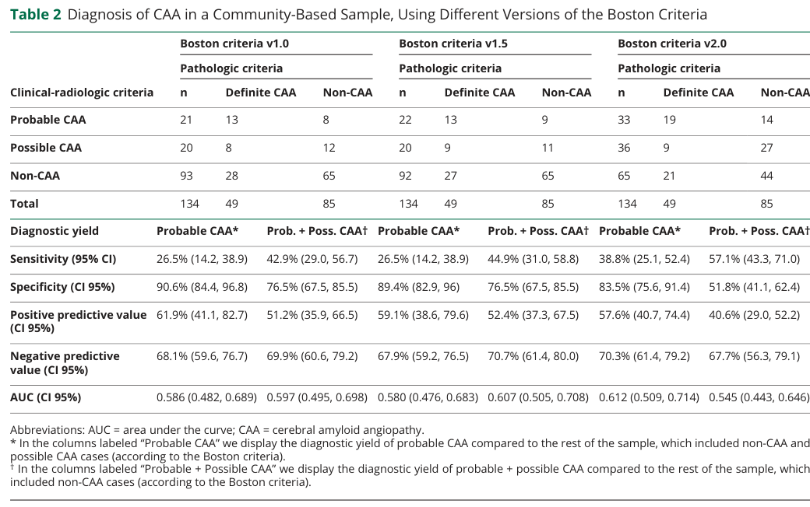

Cerebral amyloid angiopathy (CAA) is an age-related cerebral small-vessel disease characterized by deposition of amyloid-beta (Abeta) in the walls of cortical and leptomeningeal small arteries, arterioles, and capillaries. Progressive vascular amyloid deposition with smooth muscle cell loss and vessel-wall fragility predisposes to spontaneous strictly lobar intracerebral hemorrhage (often recurrent), strictly lobar cerebral microbleeds, convexity subarachnoid hemorrhage, cortical superficial siderosis, transient focal neurological episodes ("amyloid spells"), and progressive cognitive decline. Non-hemorrhagic markers include white matter hyperintensities and enlarged centrum semiovale perivascular spaces. The common sporadic form increases in prevalence with age and is strongly associated with the APOE genotype (ε4 increases risk; ε2 is associated with vessel fragility/hemorrhage), while rare hereditary forms are caused by mutations in APP (e.g. Dutch-type HCHWA-D, APP p.E693Q) and in non-Abeta genes such as CST3 (cystatin C / Icelandic-type ACys). A rare iatrogenic form arises from prion-like Abeta "seeding" after exposure to cadaveric tissue (dura mater grafts, pituitary-derived growth hormone) decades earlier. Diagnosis in life relies on the Boston criteria v2.0 (clinical and MRI markers); definitive diagnosis requires histopathology. There is no targeted disease-modifying therapy; management is supportive and centered on hemorrhage-risk mitigation.
Ask a research question about Cerebral Amyloid Angiopathy. OpenScientist will conduct autonomous deep research using the Disorder Mechanisms Knowledge Base and PubMed literature (typically 10-30 minutes).
Do not include personal health information in your question. Questions and results are cached in your browser's local storage.
name: Cerebral Amyloid Angiopathy
creation_date: "2026-06-03T12:00:00Z"
category: Complex
synonyms:
- CAA
- cerebral beta-amyloid angiopathy
- congophilic angiopathy
- hereditary cerebral hemorrhage with amyloidosis
description: >-
Cerebral amyloid angiopathy (CAA) is an age-related cerebral small-vessel
disease characterized by deposition of amyloid-beta (Abeta) in the walls of
cortical and leptomeningeal small arteries, arterioles, and capillaries.
Progressive vascular amyloid deposition with smooth muscle cell loss and
vessel-wall fragility predisposes to spontaneous strictly lobar intracerebral
hemorrhage (often recurrent), strictly lobar cerebral microbleeds, convexity
subarachnoid hemorrhage, cortical superficial siderosis, transient focal
neurological episodes ("amyloid spells"), and progressive cognitive decline.
Non-hemorrhagic markers include white matter hyperintensities and enlarged
centrum semiovale perivascular spaces. The common sporadic form increases in
prevalence with age and is strongly associated with the APOE genotype (ε4
increases risk; ε2 is associated with vessel fragility/hemorrhage), while rare
hereditary forms are caused by mutations in APP (e.g. Dutch-type HCHWA-D, APP
p.E693Q) and in non-Abeta genes such as CST3 (cystatin C / Icelandic-type
ACys). A rare iatrogenic form arises from prion-like Abeta "seeding" after
exposure to cadaveric tissue (dura mater grafts, pituitary-derived growth
hormone) decades earlier. Diagnosis in life relies on the Boston criteria
v2.0 (clinical and MRI markers); definitive diagnosis requires
histopathology. There is no targeted disease-modifying therapy; management is
supportive and centered on hemorrhage-risk mitigation.
disease_term:
preferred_term: Cerebral amyloid angiopathy
term:
id: MONDO:0005620
label: cerebral amyloid angiopathy
parents:
- cerebrovascular disorder
- amyloidosis
references:
- reference: PMID:40721902
title: >-
Diagnosis and management of cerebral amyloid angiopathy: a scientific
statement from the International CAA Association and the World Stroke
Organization.
- reference: PMID:37236210
title: "Progression of cerebral amyloid angiopathy: a pathophysiological framework."
- reference: PMID:37280119
title: "Clinical considerations in early-onset cerebral amyloid angiopathy."
has_subtypes:
- name: Sporadic
display_name: Sporadic amyloid-beta CAA
description: >-
The commonest form of CAA, an age-related amyloid-beta cerebral small-vessel
disease that usually affects people in mid- to later life. APOE genotype is
the most significant common genetic risk factor.
inheritance:
- name: Multifactorial / sporadic
evidence:
- reference: PMID:37280119
reference_title: "Clinical considerations in early-onset cerebral amyloid angiopathy."
supports: SUPPORT
evidence_source: HUMAN_CLINICAL
snippet: "The commonest form, sporadic amyloid-β CAA, usually affects people in mid- to later life."
explanation: Defines sporadic amyloid-beta CAA as the commonest, later-life form.
- name: Dutch-type
display_name: Dutch-type hereditary CAA (HCHWA-D, APP p.E693Q)
description: >-
Autosomal dominant hereditary CAA caused by the APP E693Q (Dutch) amino acid
substitution. It is considered a "pure" form of CAA with minimal
Alzheimer-type plaques and tangles, with early-onset recurrent lobar
hemorrhage.
subtype_term:
preferred_term: Dutch-type hereditary cerebral amyloid angiopathy
term:
id: MONDO:0011583
label: cerebral amyloid angiopathy, APP-related
inheritance:
- name: Autosomal dominant
genes:
- preferred_term: APP
term:
id: hgnc:620
label: APP
evidence:
- reference: PMID:37280119
reference_title: "Clinical considerations in early-onset cerebral amyloid angiopathy."
supports: SUPPORT
evidence_source: HUMAN_CLINICAL
snippet: "monogenic causes of amyloid-β CAA (APP missense mutations and copy number variants; mutations of PSEN1 and PSEN2)"
explanation: >-
Supports monogenic amyloid-beta CAA from APP missense mutations; the Dutch
APP E693Q substitution is the prototypical hereditary CAA variant.
- name: ACys
display_name: Icelandic-type hereditary CAA (HCHWA-I, CST3 / cystatin C)
description: >-
Hereditary non-amyloid-beta CAA caused by mutation in CST3 (cystatin C),
historically termed hereditary cerebral hemorrhage with amyloidosis,
Icelandic type (HCHWA-I), in which cystatin C amyloid deposits in cerebral
vessels.
inheritance:
- name: Autosomal dominant
genes:
- preferred_term: CST3
term:
id: hgnc:2475
label: CST3
evidence:
- reference: PMID:37280119
reference_title: "Clinical considerations in early-onset cerebral amyloid angiopathy."
supports: SUPPORT
evidence_source: HUMAN_CLINICAL
snippet: "non-amyloid-β CAA (associated with ITM2B, CST3, GSN, PRNP and TTR mutations)"
explanation: Supports CST3 as a monogenic cause of non-amyloid-beta hereditary CAA.
- name: Iatrogenic
display_name: Iatrogenic CAA (acquired Abeta seeding)
description: >-
A rare, increasingly recognized acquired form attributed to prion-like
Abeta "seeding" after medical exposure to contaminated cadaveric tissue
(dura mater grafts/Lyodura, pituitary-derived human growth hormone,
neurosurgical instrumentation), typically presenting decades after exposure.
evidence:
- reference: PMID:37236210
reference_title: "Progression of cerebral amyloid angiopathy: a pathophysiological framework."
supports: SUPPORT
evidence_source: HUMAN_CLINICAL
snippet: "individuals with hereditary, sporadic, and iatrogenic forms of cerebral amyloid angiopathy"
explanation: Establishes iatrogenic CAA as a recognized form alongside hereditary and sporadic CAA.
pathophysiology:
- name: Impaired perivascular amyloid-beta clearance
description: >-
Reduced clearance of soluble Abeta along perivascular (intramural
periarterial) drainage pathways leads to its progressive accumulation in
cortical and leptomeningeal vessel walls. APOE modulates Abeta processing,
aggregation, and clearance, making APOE genotype the dominant common genetic
determinant of sporadic CAA.
biological_processes:
- preferred_term: Amyloid-beta clearance
term:
id: GO:0097242
label: amyloid-beta clearance
modifier: DECREASED
cell_types:
- preferred_term: Astrocyte
term:
id: CL:0000127
label: astrocyte
- preferred_term: Vascular endothelial cell
term:
id: CL:0000115
label: endothelial cell
evidence:
- reference: PMID:39745195
reference_title: "Deciphering the role of APOE in cerebral amyloid angiopathy: from genetic insights to therapeutic horizons."
supports: SUPPORT
evidence_source: HUMAN_CLINICAL
snippet: "it plays a known role in processing, production, aggregation, and clearance"
explanation: >-
Supports APOE's role in Abeta processing, aggregation, and clearance,
the upstream determinant of impaired perivascular Abeta clearance in CAA.
downstream:
- target: Vascular amyloid-beta deposition
causal_link_type: DIRECT
- name: Vascular amyloid-beta deposition
description: >-
Aβ deposition in the walls of small and medium cortical and leptomeningeal
vessels of the cerebrum and cerebellum is the defining lesion of CAA. This
is the first stage of a multi-decade progression framework.
biological_processes:
- preferred_term: Amyloid-beta formation
term:
id: GO:0034205
label: amyloid-beta formation
modifier: INCREASED
cell_types:
- preferred_term: Vascular smooth muscle cell of the brain vasculature
term:
id: CL:0002590
label: smooth muscle cell of the brain vasculature
evidence:
- reference: PMID:39745195
reference_title: "Deciphering the role of APOE in cerebral amyloid angiopathy: from genetic insights to therapeutic horizons."
supports: SUPPORT
evidence_source: HUMAN_CLINICAL
snippet: "characterized by the deposition of amyloid-β \n(Aβ) peptides in the walls of medium and small vessels of the brain and \nleptomeninges"
explanation: Directly supports vascular Abeta deposition as the defining lesion of CAA.
- reference: PMID:37236210
reference_title: "Progression of cerebral amyloid angiopathy: a pathophysiological framework."
supports: SUPPORT
evidence_source: HUMAN_CLINICAL
snippet: "(stage one) \ninitial vascular amyloid deposition"
explanation: Identifies initial vascular amyloid deposition as the first stage of CAA progression.
downstream:
- target: Vessel-wall degeneration and fragility
causal_link_type: DIRECT
- name: Vessel-wall degeneration and fragility
description: >-
Progressive vascular amyloid deposition is accompanied by loss of vascular
smooth muscle cells, vessel-wall thickening, and altered cerebrovascular
physiology, weakening the vessel wall. Hypertension is a major non-genetic
trigger that promotes vessel-wall weakening and hemorrhage. These changes
progress through altered cerebrovascular physiology to non-hemorrhagic brain
injury.
cell_types:
- preferred_term: Vascular smooth muscle cell of the brain vasculature
term:
id: CL:0002590
label: smooth muscle cell of the brain vasculature
modifier: DECREASED
evidence:
- reference: PMID:37236210
reference_title: "Progression of cerebral amyloid angiopathy: a pathophysiological framework."
supports: SUPPORT
evidence_source: HUMAN_CLINICAL
snippet: "(stage two) \nalteration of cerebrovascular physiology, (stage three) non-haemorrhagic brain injury"
explanation: >-
Supports the staged transition from altered cerebrovascular physiology to
non-hemorrhagic brain injury that precedes hemorrhagic lesions.
downstream:
- target: Hemorrhagic and non-hemorrhagic brain injury
causal_link_type: DIRECT
- name: Hemorrhagic and non-hemorrhagic brain injury
description: >-
Vessel fragility and small-vessel dysfunction produce both non-hemorrhagic
injury (white matter hyperintensities, microinfarcts, enlarged perivascular
spaces) and hemorrhagic lesions (strictly lobar cerebral microbleeds,
convexity subarachnoid hemorrhage, cortical superficial siderosis, and lobar
intracerebral hemorrhage), and contributes to cognitive decline. This is the
final stage of the progression framework.
evidence:
- reference: PMID:37236210
reference_title: "Progression of cerebral amyloid angiopathy: a pathophysiological framework."
supports: SUPPORT
evidence_source: HUMAN_CLINICAL
snippet: "(stage four) \nappearance of haemorrhagic brain lesions"
explanation: Identifies appearance of hemorrhagic brain lesions as the terminal stage of CAA progression.
- reference: PMID:40149580
reference_title: "Cerebral Amyloid Angiopathy: Clinical Presentation, Sequelae and Neuroimaging Features-An Update."
supports: SUPPORT
evidence_source: HUMAN_CLINICAL
snippet: "neuroradiologic findings of CAA include cortical and subcortical microbleeds \n(MB), cortical subarachnoid hemorrhage (cSAH) and cortical superficial siderosis"
explanation: Supports the spectrum of hemorrhagic lesions resulting from CAA vessel injury.
- name: Iatrogenic prion-like Abeta seeding
description: >-
Exogenous Abeta assemblies introduced via contaminated cadaveric tissue can
seed vascular and parenchymal Abeta pathology after long incubation periods,
consistent with prion-like templated misfolding, producing acquired
(iatrogenic) CAA and Alzheimer-type pathology decades after exposure.
biological_processes:
- preferred_term: Amyloid-beta formation
term:
id: GO:0034205
label: amyloid-beta formation
modifier: INCREASED
evidence:
- reference: PMID:38287166
reference_title: "Iatrogenic Alzheimer's disease in recipients of cadaveric pituitary-derived growth hormone."
supports: SUPPORT
evidence_source: HUMAN_CLINICAL
snippet: "We \npreviously reported human transmission of Aβ pathology and CAA in relatively \nyoung adults who had died of iatrogenic Creutzfeldt-Jakob disease (iCJD) after \nchildhood treatment with cadaver-derived pituitary growth hormone (c-hGH) \ncontaminated with both CJD prions and Aβ seeds."
explanation: >-
Directly supports prion-like Abeta seeding from contaminated cadaveric
growth hormone as a cause of transmitted CAA.
- reference: PMID:38287166
reference_title: "Iatrogenic Alzheimer's disease in recipients of cadaveric pituitary-derived growth hormone."
supports: SUPPORT
evidence_source: HUMAN_CLINICAL
snippet: "As propagating Aβ \nassemblies may exhibit structural diversity akin to conventional prions"
explanation: Supports the prion-like templated propagation mechanism underlying iatrogenic Abeta seeding.
downstream:
- target: Vascular amyloid-beta deposition
causal_link_type: DIRECT
phenotypes:
- name: Lobar intracerebral hemorrhage
category: Neurologic
description: >-
CAA is a major cause of spontaneous strictly lobar (cortical/subcortical)
intracerebral hemorrhage, which has high mortality, morbidity, and a high
recurrence rate.
phenotype_term:
preferred_term: Lobar intracerebral hemorrhage
term:
id: HP:0001342
label: Cerebral hemorrhage
evidence:
- reference: PMID:40721902
reference_title: "Diagnosis and management of cerebral amyloid angiopathy: a scientific statement from the International CAA Association and the World Stroke Organization."
supports: SUPPORT
evidence_source: HUMAN_CLINICAL
snippet: "CAA is a major cause of spontaneous lobar intracerebral hemorrhage \n(ICH), and can also cause transient focal neurological episodes, and convexity \nsubarachnoid hemorrhage, CAA-associated ICH has a high mortality, morbidity, and \nrecurrence rate."
explanation: >-
Directly supports lobar ICH as a major, high-recurrence manifestation of
CAA.
- name: Cerebral microbleeds
category: Neurologic
description: >-
Strictly lobar (cortical and subcortical) cerebral microbleeds are a core
hemorrhagic neuroimaging marker of CAA; a higher number of strictly cortical
microbleeds improves diagnostic specificity and predicts recurrent ICH risk.
phenotype_term:
preferred_term: Strictly lobar cerebral microbleeds
term:
id: HP:0001342
label: Cerebral hemorrhage
evidence:
- reference: PMID:40149580
reference_title: "Cerebral Amyloid Angiopathy: Clinical Presentation, Sequelae and Neuroimaging Features-An Update."
supports: SUPPORT
evidence_source: HUMAN_CLINICAL
snippet: "neuroradiologic findings of CAA include cortical and subcortical microbleeds \n(MB)"
explanation: >-
Supports cortical/subcortical microbleeds as a core neuroimaging marker of
CAA. HPO lacks a dedicated cerebral microbleed term, so the closest parent
(Cerebral hemorrhage) is used with a specific preferred_term.
- name: Convexity subarachnoid hemorrhage
category: Neurologic
description: >-
Cortical (convexity) subarachnoid hemorrhage is a characteristic
hemorrhagic manifestation of CAA, often underlying transient focal
neurological episodes.
phenotype_term:
preferred_term: Cortical (convexity) subarachnoid hemorrhage
term:
id: HP:0002138
label: Subarachnoid hemorrhage
evidence:
- reference: PMID:40566003
reference_title: "Clinical Management of Cerebral Amyloid Angiopathy."
supports: SUPPORT
evidence_source: HUMAN_CLINICAL
snippet: "transient focal neurologic episodes attributed to convexity subarachnoid \nhemorrhage or cortical superficial siderosis, and progressive cognitive decline"
explanation: Supports convexity (cortical) subarachnoid hemorrhage as a CAA manifestation underlying transient focal neurologic episodes.
- name: Cortical superficial siderosis
category: Neurologic
description: >-
Cortical superficial siderosis (cSS) reflects chronic blood-breakdown
products over the cortical surface; disseminated cSS is among the strongest
predictors of future intracerebral hemorrhage in CAA.
phenotype_term:
preferred_term: Cortical superficial siderosis
term:
id: HP:0002138
label: Subarachnoid hemorrhage
notes: >-
HPO mapping limitation: cortical superficial siderosis (cSS) is a chronic
hemosiderin-deposition sequela of prior cortical/subarachnoid bleeding, not
an active subarachnoid hemorrhage. No dedicated HPO term for cSS exists, so
HP:0002138 (Subarachnoid hemorrhage) is used as the closest available term
(shared with the convexity SAH phenotype). cSS is a candidate for an HPO new
term request (NTR).
evidence:
- reference: PMID:40149580
reference_title: "Cerebral Amyloid Angiopathy: Clinical Presentation, Sequelae and Neuroimaging Features-An Update."
supports: SUPPORT
evidence_source: HUMAN_CLINICAL
snippet: "(MB), cortical subarachnoid hemorrhage (cSAH) and cortical superficial siderosis"
explanation: >-
Supports cortical superficial siderosis as a CAA neuroimaging finding.
HPO lacks a dedicated cSS term, so the related Subarachnoid hemorrhage
term is used with a specific preferred_term.
- name: Transient focal neurological episodes
category: Neurologic
description: >-
Transient focal neurologic episodes (TFNE; "amyloid spells") are recurrent,
often stereotyped, transient symptoms attributed to convexity subarachnoid
hemorrhage or cortical superficial siderosis.
phenotype_term:
preferred_term: Transient focal neurological episodes
term:
id: HP:0002326
label: Transient ischemic attack
temporality: TRANSIENT
evidence:
- reference: PMID:40566003
reference_title: "Clinical Management of Cerebral Amyloid Angiopathy."
supports: SUPPORT
evidence_source: HUMAN_CLINICAL
snippet: "transient focal neurologic episodes attributed to convexity subarachnoid \nhemorrhage or cortical superficial siderosis"
explanation: >-
Supports TFNE as a clinical manifestation of CAA. HPO lacks a dedicated
TFNE term; the closest available transient focal neurological term
(Transient ischemic attack) is used with a specific preferred_term.
- name: Progressive cognitive decline
category: Neurologic
description: >-
CAA contributes to vascular cognitive impairment and progressive cognitive
decline that may lead to dementia, and frequently coexists with Alzheimer's
disease pathology.
phenotype_term:
preferred_term: Cognitive impairment
term:
id: HP:0100543
label: Cognitive impairment
clinical_course: PROGRESSIVE
evidence:
- reference: PMID:40149580
reference_title: "Cerebral Amyloid Angiopathy: Clinical Presentation, Sequelae and Neuroimaging Features-An Update."
supports: SUPPORT
evidence_source: HUMAN_CLINICAL
snippet: "transient focal neurologic episodes (TFNE) and progressive cognitive \ndecline, potentially leading to Alzheimer's disease (AD)"
explanation: Supports progressive cognitive decline as a manifestation of CAA.
- name: Dementia
category: Neurologic
description: >-
Progressive cognitive decline in CAA can lead to dementia.
phenotype_term:
preferred_term: Dementia
term:
id: HP:0000726
label: Dementia
evidence:
- reference: PMID:40566003
reference_title: "Clinical Management of Cerebral Amyloid Angiopathy."
supports: SUPPORT
evidence_source: HUMAN_CLINICAL
snippet: "progressive cognitive decline \nleading to dementia"
explanation: Supports dementia as an outcome of progressive CAA-related cognitive decline.
- name: Seizures
category: Neurologic
description: >-
Seizures occur particularly in CAA-related inflammation (CAA-ri), a
treatable inflammatory subtype presenting with subacute neuropsychiatric and
cognitive symptoms and asymmetric white matter lesions.
phenotype_term:
preferred_term: Seizure
term:
id: HP:0001250
label: Seizure
evidence:
- reference: PMID:37179808
reference_title: "Cerebral amyloid angiopathy related inflammation: An under recognized but treatable complication of cerebral amyloid angiopathy."
supports: SUPPORT
evidence_source: HUMAN_CLINICAL
snippet: "cerebral amyloid angiopathy (CAA) causing a reversible encephalopathy \ncharacterized by seizures and focal neurological deficit."
explanation: >-
Directly supports seizures as a defining feature of CAA-related
inflammation (CAA-ri).
- name: White matter hyperintensities
category: Neurologic
description: >-
Multiple hyperintense lesions on T2-weighted MRI (a multispot white matter
hyperintensity pattern) and dilated centrum semiovale perivascular spaces are
non-hemorrhagic neuroimaging markers of CAA incorporated into the Boston
criteria v2.0.
phenotype_term:
preferred_term: White matter hyperintensities on MRI
term:
id: HP:0030890
label: Hyperintensity of cerebral white matter on MRI
evidence:
- reference: PMID:40149580
reference_title: "Cerebral Amyloid Angiopathy: Clinical Presentation, Sequelae and Neuroimaging Features-An Update."
supports: SUPPORT
evidence_source: HUMAN_CLINICAL
snippet: "Non-hemorrhagic pathologies include dilated perivascular spaces in the \ncentrum semiovale and multiple hyperintense lesions on T2-weighted magnetic \nresonance imaging (MRI)."
explanation: Supports white matter hyperintensities as a non-hemorrhagic CAA neuroimaging marker.
genetic:
- name: APOE
association: Genetic Risk Factor
relationship_type: RISK_FACTOR
subtype: Sporadic
gene_term:
preferred_term: APOE
term:
id: hgnc:613
label: APOE
notes: >-
APOE is the most significant and prevalent common genetic risk factor for
CAA, implicated in more than half of patients. The ε4 allele markedly
increases CAA risk, while the ε2 allele confers a protective effect relative
to the common ε3 allele for CAA risk overall yet is associated with vessel
fragility and hemorrhage.
evidence:
- reference: PMID:39745195
reference_title: "Deciphering the role of APOE in cerebral amyloid angiopathy: from genetic insights to therapeutic horizons."
supports: SUPPORT
evidence_source: HUMAN_CLINICAL
snippet: "the \napolipoprotein E (APOE) gene is the most significant and prevalent, as its \nvariants have been implicated in more than half of all patients with CAA."
explanation: Supports APOE as the most significant common genetic risk factor for CAA.
- reference: PMID:39745195
reference_title: "Deciphering the role of APOE in cerebral amyloid angiopathy: from genetic insights to therapeutic horizons."
supports: SUPPORT
evidence_source: HUMAN_CLINICAL
snippet: "While \nthe presence of the APOE ε4 allele markedly increases the risk of CAA, the ε2 \nallele confers a protective effect relative to the common ε3 allele."
explanation: Supports the opposing risk effects of APOE ε4 and ε2 alleles in CAA.
- name: APP
association: Genetic Mutation
relationship_type: CAUSATIVE
subtype: Dutch-type
gene_term:
preferred_term: APP
term:
id: hgnc:620
label: APP
inheritance:
- name: Autosomal dominant
notes: >-
APP missense mutations and copy-number variants cause monogenic
amyloid-beta CAA. The APP E693Q (Dutch) substitution causes Dutch-type
hereditary CAA (HCHWA-D).
evidence:
- reference: PMID:37280119
reference_title: "Clinical considerations in early-onset cerebral amyloid angiopathy."
supports: SUPPORT
evidence_source: HUMAN_CLINICAL
snippet: "monogenic causes of amyloid-β CAA (APP missense mutations and copy number variants; mutations of PSEN1 and PSEN2)"
explanation: Supports APP missense mutations and copy-number variants as monogenic causes of amyloid-beta CAA.
- name: CST3
association: Genetic Mutation
relationship_type: CAUSATIVE
subtype: ACys
gene_term:
preferred_term: CST3
term:
id: hgnc:2475
label: CST3
inheritance:
- name: Autosomal dominant
notes: >-
CST3 (cystatin C) mutation causes hereditary non-amyloid-beta CAA
(Icelandic-type, HCHWA-I / ACys).
evidence:
- reference: PMID:37280119
reference_title: "Clinical considerations in early-onset cerebral amyloid angiopathy."
supports: SUPPORT
evidence_source: HUMAN_CLINICAL
snippet: "non-amyloid-β CAA (associated with ITM2B, CST3, GSN, PRNP and TTR mutations)"
explanation: Supports CST3 as a cause of hereditary non-amyloid-beta CAA.
environmental:
- name: Iatrogenic Abeta exposure
description: >-
Medical exposure to Abeta-contaminated cadaveric tissue — cadaveric dura
mater grafts (e.g. Lyodura), pituitary-derived human growth hormone, and
neurosurgical instrumentation — can transmit Abeta pathology and cause
iatrogenic CAA after a latency of decades.
evidence:
- reference: PMID:37214406
reference_title: "Case report of iatrogenic cerebral amyloid angiopathy after exposure to Lyodura: an Australian perspective."
supports: SUPPORT
evidence_source: HUMAN_CLINICAL
snippet: "Archived surgical notes confirmed exposure to Lyodura in 1985 and 1986."
explanation: >-
Case report documenting Lyodura (cadaveric dura mater) exposure preceding
biopsy-confirmed iatrogenic CAA.
- name: Hypertension
description: >-
Hypertension is identified as a major non-genetic trigger that may promote
vessel-wall weakening and hemorrhage in CAA; vascular risk-factor control is
a mainstay of management.
evidence:
- reference: PMID:40721902
reference_title: "Diagnosis and management of cerebral amyloid angiopathy: a scientific statement from the International CAA Association and the World Stroke Organization."
supports: PARTIAL
evidence_source: HUMAN_CLINICAL
snippet: "vascular risk factors and concomitant medications"
explanation: >-
Guideline statement addresses vascular risk factors (including
hypertension) and concomitant medications as a management domain in CAA.
treatments:
- name: Vascular risk factor control (blood pressure management)
description: >-
Management of CAA centers on mitigating hemorrhage risk; blood-pressure
control is a major modifiable target given that hypertension promotes
vessel-wall weakening and hemorrhage. No targeted disease-modifying therapy
currently exists.
treatment_term:
preferred_term: antihypertensive pharmacotherapy
term:
id: NCIT:C15986
label: Pharmacotherapy
therapeutic_agent:
- preferred_term: antihypertensive agent
term:
id: NCIT:C270
label: Antihypertensive Agent
evidence:
- reference: PMID:40566003
reference_title: "Clinical Management of Cerebral Amyloid Angiopathy."
supports: SUPPORT
evidence_source: HUMAN_CLINICAL
snippet: "A \ntargeted therapy does not currently exist."
explanation: >-
Confirms the absence of targeted disease-modifying therapy, supporting a
management approach centered on risk-factor control such as blood pressure.
- reference: PMID:40721902
reference_title: "Diagnosis and management of cerebral amyloid angiopathy: a scientific statement from the International CAA Association and the World Stroke Organization."
supports: SUPPORT
evidence_source: HUMAN_CLINICAL
snippet: "vascular risk factors and concomitant medications"
explanation: >-
The International CAA Association/WSO scientific statement explicitly
identifies vascular risk factor management (including blood pressure) as a
core domain of CAA clinical management.
- name: Immunosuppressive therapy for CAA-related inflammation
description: >-
CAA-related inflammation (CAA-ri) is a treatable inflammatory subtype that
should be recognized early and treated promptly; corticosteroids and
immunosuppression are used, with better functional outcomes when treated
promptly.
treatment_term:
preferred_term: immunosuppressive therapy
term:
id: NCIT:C15261
label: Immunosuppressive Therapy
therapeutic_agent:
- preferred_term: corticosteroid
term:
id: CHEBI:50858
label: corticosteroid
evidence:
- reference: PMID:40566003
reference_title: "Clinical Management of Cerebral Amyloid Angiopathy."
supports: SUPPORT
evidence_source: HUMAN_CLINICAL
snippet: "Inflammatory CAA subtype should be recognized early and \ntreated promptly so that better functional outcomes may be achieved."
explanation: Supports prompt immunosuppressive treatment of the inflammatory CAA subtype.
- name: Supportive care
description: >-
In the absence of disease-modifying therapy, management is largely
supportive, including individualized antithrombotic decisions and treatment
of CAA manifestations.
treatment_term:
preferred_term: supportive care
term:
id: MAXO:0000950
label: supportive care
evidence:
- reference: PMID:40721902
reference_title: "Diagnosis and management of cerebral amyloid angiopathy: a scientific statement from the International CAA Association and the World Stroke Organization."
supports: SUPPORT
evidence_source: HUMAN_CLINICAL
snippet: "antithrombotic agents and vascular interventions"
explanation: >-
Guideline addresses individualized antithrombotic management, a component
of supportive care in CAA.
- name: Genetic counseling
description: >-
Genetic counseling is relevant for hereditary forms of CAA (e.g. Dutch-type
APP and Icelandic-type CST3), which warrant specific and focused
investigation and management.
treatment_term:
preferred_term: genetic counseling
term:
id: MAXO:0000079
label: genetic counseling
evidence:
- reference: PMID:37280119
reference_title: "Clinical considerations in early-onset cerebral amyloid angiopathy."
supports: SUPPORT
evidence_source: HUMAN_CLINICAL
snippet: "early-onset forms, though uncommon, are increasingly recognized and may result \nfrom genetic or iatrogenic causes that warrant specific and focused \ninvestigation and management."
explanation: >-
Supports the need for focused investigation and management of genetic
early-onset CAA, where genetic counseling is relevant.
clinical_trials:
- name: NCT05709314
phase: PHASE_II
status: RECRUITING
description: >-
Study of AMDX-2011P, a retinal amyloid tracer, in participants with CAA;
endpoints include adverse events, pharmacokinetics, and retinal amyloid
detection via fundus fluorescence imaging.
evidence:
- reference: clinicaltrials:NCT05709314
supports: SUPPORT
snippet: "The purpose of this study is to assess safety, tolerability, plasma pharmacokinetics and biologic activity of a single intravenous dose of AMDX-2011P in participants with cerebral amyloid angiopathy (CAA)."
explanation: >-
Confirms the trial is evaluating an amyloid-targeting retinal tracer
(AMDX-2011P) in CAA participants, supporting emerging diagnostic
development for CAA.
notes: >-
Diagnosis in life uses the Boston criteria v2.0, which combine clinical and
MRI markers: probable CAA requires age >=50, an appropriate clinical
presentation, and either >=2 strictly lobar hemorrhagic lesions (lobar ICH,
cerebral microbleeds, cSS/cSAH) or 1 strictly lobar hemorrhagic lesion plus 1
non-hemorrhagic white-matter feature (severe centrum semiovale enlarged
perivascular spaces or a multispot WMH pattern), with absence of deep
hemorrhagic lesions. In a community-based autopsy-validated sample (n=134; 49
definite CAA), Boston criteria v2.0 showed sensitivity 38.8% and specificity
83.5% for probable CAA, versus sensitivity 26.5% for v1.0/v1.5 (PMID:38165367).
Definitive diagnosis still requires histopathological confirmation. CAA
accounts for a substantial fraction of spontaneous lobar ICH; autopsy
prevalence rises steeply with age and CAA coexists with Alzheimer's pathology
in the large majority of cases. ARIA (amyloid-related imaging abnormalities)
is an important safety concern with anti-Abeta immunotherapies, with imaging
features resembling spontaneous CAA-related inflammation; CAA status affects
the safety of anti-Abeta immunotherapy (PMID:40721902, PMID:40149580).
datasets: []
CAA is described as “a common neuropathologic finding characterized by the deposition of β-amyloid in the walls of cortical and leptomeningeal blood vessels,” and is a major cause of recurrent lobar ICH and a contributor to cognitive impairment/dementia. (zotin2024sensitivityandspecificity pages 1-2)
A mechanistic definition used in clinical guidance/reviews emphasizes that Aβ accumulates in leptomeningeal and cortical arterioles/capillaries, leading to vascular cell loss, impaired vascular physiology, white matter injury, and later hemorrhagic lesions (cerebral microbleeds [CMB], convexity SAH [cSAH], cSS, lobar ICH). (cordonnier2025diagnosisandmanagement pages 8-11)
Not available from retrieved evidence in this run: ICD-10/ICD-11 codes, MeSH ID, Orphanet ID, OMIM disease entry numbers for “CAA” as a concept (note that specific hereditary CAA entities are often OMIM-classified by gene/variant and were not pulled as ontology records here).
Commonly used synonymous phrasing in the retrieved literature includes: * “cerebral β-amyloid angiopathy” / “amyloid-β CAA” (banerjee2023clinicalconsiderationsin pages 1-1) * “congophilic angiopathy” (conventional clinicopathologic synonym; not explicitly enumerated in the retrieved excerpts, but consistent with standard neuropathology terminology)
The information summarized here is largely from aggregated disease-level sources (consensus statement/reviews and large observational datasets) rather than EHR case series, except where explicitly noted (iatrogenic CAA case reports and transmissibility discussions). (cordonnier2025diagnosisandmanagement pages 8-11, muller2023casereportof pages 1-2, zhao2023intracerebralhemorrhageamong pages 1-5)
Core causal mechanism: Aβ deposition in small/medium cortical and leptomeningeal vessel walls, progressively disrupting vessel structure/function and causing downstream hemorrhagic and ischemic injury. (cordonnier2025diagnosisandmanagement pages 8-11, weidauer2025cerebralamyloidangiopathy pages 1-2)
Genetic and acquired etiologies are especially relevant for early-onset disease.
Common susceptibility * APOE is consistently highlighted as a key genetic factor in CAA; both ε2 and ε4 alleles are associated with CAA, and APOE4 is emphasized as strongly linked to CAA pathogenesis through modulation of Aβ aggregation/clearance and neurovascular dysfunction. (hu2025decipheringtherole pages 9-11, banerjee2023clinicalconsiderationsin pages 2-3)
Monogenic causes of early-onset CAA (2023 emphasis) Banerjee et al. (Brain, 2023) explicitly summarize early-onset causes, including: * Amyloid-β CAA genes: APP missense mutations and copy-number variants; PSEN1 and PSEN2 mutations. (banerjee2023clinicalconsiderationsin pages 1-1) * Non–amyloid-β CAA genes: ITM2B, CST3, GSN, PRNP, TTR mutations. (banerjee2023clinicalconsiderationsin pages 1-1)
Dutch-type hereditary CAA (D-CAA) Koemans et al. (Lancet Neurology, 2023) describe D-CAA as caused by an APP E693Q substitution and as a “pure form of CAA” with minimal Alzheimer-type plaques/tangles. (koemans2023progressionofcerebral pages 6-9)
Iatrogenic Aβ seeding (2023–2024 focus) CAA can be acquired via iatrogenic Aβ “seeding” after medical exposures. The 2023 Lancet Neurology framework reports iatrogenic CAA cases linked to “growth hormone preparations, cadaveric dura, and neurosurgical instrumentation,” with mean latency 34 years (range 25–46) among 23 published cases. (koemans2023progressionofcerebral pages 6-9)
A 2024 Nature Medicine study on cadaveric pituitary-derived growth hormone (c-hGH) recipients supports iatrogenic Aβ transmission and links Aβ deposition patterns to CAA, noting that Aβ appears as “parenchymal and leptomeningeal vascular aggregation, corresponding to CAA.” (banerjee2024iatrogenicalzheimer’sdisease pages 2-3)
Direct quote (abstract, Nature Medicine 2024): “Alzheimer’s disease (AD) is characterized pathologically by amyloid-beta (Aβ) deposition in brain parenchyma and blood vessels (as cerebral amyloid angiopathy (CAA)) …” (banerjee2024iatrogenicalzheimer’sdisease pages 2-3)
Latency (Nature Medicine 2024): “latency from c-hGH exposure was three to four decades” with symptom onset between ages 38 and 55 in described cases. (banerjee2024iatrogenicalzheimer’sdisease pages 2-3)
Hypertension Hypertension is identified as a major non-genetic trigger that may promote vessel-wall weakening and hemorrhage. (weidauer2025cerebralamyloidangiopathy pages 1-2, weidauer2025cerebralamyloidangiopathy pages 2-4)
Protective genetic/environmental factors were not robustly extractable from the retrieved evidence. A review focusing on APOE states (at a high level) that ε2 can confer a “protective effect relative to the common ε3 allele,” but this claim is presented in a 2025 review and is not accompanied by extractable quantitative protective estimates in the evidence gathered here. (weidauer2025cerebralamyloidangiopathy pages 1-2, hu2025decipheringtherole pages 9-11)
The retrieved evidence supports plausible interaction between genetic background (e.g., APOE genotype) and acquired Aβ seeding exposures (iatrogenic forms) but does not provide formal interaction effect estimates. (koemans2023progressionofcerebral pages 6-9, banerjee2024iatrogenicalzheimer’sdisease pages 2-3)
Common clinical manifestations summarized across guidance/reviews include: * Spontaneous lobar ICH (often recurrent) (cordonnier2025diagnosisandmanagement pages 8-11, theodorou2025clinicalmanagementof pages 1-3) * Convexity subarachnoid hemorrhage (cSAH) and cortical superficial siderosis (cSS) (cordonnier2025diagnosisandmanagement pages 8-11, weidauer2025cerebralamyloidangiopathy pages 4-6) * Transient focal neurologic episodes (TFNE; “amyloid spells”) attributed to cSAH/cSS (weidauer2025cerebralamyloidangiopathy pages 4-6) * Cognitive impairment / vascular cognitive impairment / dementia (cordonnier2025diagnosisandmanagement pages 8-11, theodorou2025clinicalmanagementof pages 1-3) * CAA-related inflammation (CAA-ri) with subacute neuropsychiatric/cognitive symptoms, seizures, and asymmetric white matter lesions (theodorou2025clinicalmanagementof pages 3-5)
CAA is predominantly mid- to late-life in sporadic forms, while early-onset forms may be monogenic or iatrogenic and require targeted investigation. (banerjee2023clinicalconsiderationsin pages 1-1)
Koemans et al. propose a multi-decade timeline (“two-to-three decade timeline”) with staged transition from deposition → vascular dysfunction → non-hemorrhagic injury → hemorrhagic lesions. (koemans2023progressionofcerebral pages 1-6)
Note: HPO mappings are suggested for knowledge-base normalization; the evidence excerpts provide the clinical entities but not HPO IDs.
From early-onset CAA review: * APP, PSEN1, PSEN2 (amyloid-β CAA) (banerjee2023clinicalconsiderationsin pages 1-1) * ITM2B, CST3, GSN, PRNP, TTR (non–amyloid-β CAA syndromes) (banerjee2023clinicalconsiderationsin pages 1-1)
Additional genetic factors listed (without effect sizes in retrieved excerpts) include TGF-β1, neprilysin, α1-antichymotrypsin, LRP, ACE. (weidauer2025cerebralamyloidangiopathy pages 1-2, weidauer2025cerebralamyloidangiopathy pages 2-4)
Not available from the retrieved evidence.
Iatrogenic exposures (see §2.2.2) are the most salient non-genetic contributors highlighted in 2023–2024 literature. (koemans2023progressionofcerebral pages 6-9, banerjee2024iatrogenicalzheimer’sdisease pages 2-3)
Hypertension is highlighted as a trigger for hemorrhagic events in CAA. (weidauer2025cerebralamyloidangiopathy pages 1-2, weidauer2025cerebralamyloidangiopathy pages 2-4)
Not specifically addressed in retrieved evidence.
Aβ accumulates in cortical and leptomeningeal vessel walls → vascular smooth muscle cell loss / wall thickening / impaired vascular physiology → non-hemorrhagic injury (white matter hyperintensities, microinfarcts) → vessel fragility and hemorrhagic lesions (microbleeds, cSAH, cSS, lobar ICH) and cognitive decline. (cordonnier2025diagnosisandmanagement pages 8-11, theodorou2025clinicalmanagementof pages 3-5)
Koemans et al. propose four stages over a “two-to-three decade timeline”: 1) cerebrovascular amyloid deposition 2) altered cerebrovascular physiology 3) non-haemorrhagic brain injury 4) haemorrhagic brain lesions (koemans2023progressionofcerebral pages 1-6)
The 2023 framework and 2024 Nature Medicine work support that exogenous Aβ assemblies can seed vascular Aβ pathology after long incubation periods, consistent with prion-like templated misfolding. (koemans2023progressionofcerebral pages 6-9, banerjee2024iatrogenicalzheimer’sdisease pages 2-3)
CAA-related inflammation is described as a treatable subtype; probable/possible CAA-ri diagnosis integrates clinical symptoms (headache, behavioral change, focal deficits, seizures) with asymmetric white matter hyperintensities and hemorrhagic markers, while definitive diagnosis requires biopsy. (theodorou2025clinicalmanagementof pages 3-5)
GO biological process (examples) * Amyloid-beta clearance: GO:0097242 (amyloid-beta clearance) (suggested) * Inflammatory response: GO:0006954 (suggested) * Response to oxidative stress: GO:0006979 (suggested) * Regulation of vascular permeability: GO:0043114 (suggested)
Cell Ontology (CL) cell types (examples) * Vascular smooth muscle cell: CL:0000192 (suggested; implicated by smooth muscle loss/wall pathology) (theodorou2025clinicalmanagementof pages 3-5) * Endothelial cell: CL:0000115 (suggested) (theodorou2025clinicalmanagementof pages 3-5) * Astrocyte: CL:0000127 and microglia CL:0000129 (suggested; APOE-related immune/glial functional changes discussed in APOE review) (hu2025decipheringtherole pages 9-11)
CAA primarily affects brain vessels—especially cortical and leptomeningeal arterioles/capillaries. (theodorou2025clinicalmanagementof pages 3-5, zotin2024sensitivityandspecificity pages 1-2)
UBERON suggestions * Brain: UBERON:0000955 * Cerebral cortex: UBERON:0000956 * Leptomeninx: UBERON:0001630 * Cerebral blood vessel: UBERON:0007610 (or more specific arterial terms)
Hemorrhagic lesions are classically strictly lobar/cortical rather than deep (basal ganglia, thalamus), a key discriminant in Boston criteria frameworks. (weidauer2025cerebralamyloidangiopathy pages 4-6, theodorou2025clinicalmanagementof pages 3-5)
Long natural history: CAA pathology may begin decades before symptomatic hemorrhage, consistent with a two-to-three decade progression framework. (koemans2023progressionofcerebral pages 1-6)
Early biomarker deviations in hereditary CAA: In Dutch-type hereditary CAA, CSF Aβ40/Aβ42 are detectably low in mid-20s (~30 years before average symptomatic ICH), with amyloid PET positivity later. (koemans2023progressionofcerebral pages 6-9)
Autopsy-based prevalence estimates compiled in a 2025 update review: * 5–9% (ages 60–69) * 43–58% (>90) * >80 years: 20–40% cognitively normal; 50–60% cognitively impaired * CAA present histopathologically in ~90% of Alzheimer’s disease cases (weidauer2025cerebralamyloidangiopathy pages 2-4)
CAA is usually diagnosed in life using clinical and MRI markers; definitive diagnosis requires histopathology. (weidauer2025cerebralamyloidangiopathy pages 2-4, theodorou2025clinicalmanagementof pages 1-3)
Boston criteria v2.0 non-hemorrhagic markers (as operationalized in an autopsy-validated community sample): * Severe CSO-PVS: >20 visible PVS in centrum semiovale (one slice, one hemisphere) * WMH-MS: ≥10 small round/ovoid subcortical T2-FLAIR hyperintense lesions across the whole brain (zotin2024sensitivityandspecificity pages 1-2, zotin2024sensitivityandspecificity media 692b4dd3)
Diagnostic performance (autopsy-validated, 2024 Neurology) In a community-based sample with autopsy confirmation (n=134; definite CAA n=49), Boston criteria v2.0 showed: * Sensitivity 38.8% and specificity 83.5% (probable CAA) * Earlier versions (v1.0/v1.5): sensitivity 26.5%, specificity ~90% (zotin2024sensitivityandspecificity pages 1-2, zotin2024sensitivityandspecificity media 692b4dd3)
(Visual evidence: Table reporting sensitivity/specificity and marker definitions.) (zotin2024sensitivityandspecificity media 692b4dd3)
Biomarker information in retrieved evidence is strongest for hereditary CAA (CSF Aβ40/Aβ42 reductions; PET timing) and for iatrogenic AD/CAA pathology (AT(N) biomarker patterns), while routine diagnostic use is not always necessary in guidelines. (koemans2023progressionofcerebral pages 6-9, cordonnier2025diagnosisandmanagement pages 8-11, banerjee2024iatrogenicalzheimer’sdisease pages 2-3)
Not systematically extractable from retrieved excerpts; typical clinical practice differentials include hypertensive arteriopathy for deep hemorrhages and macrovascular causes for lobar hemorrhage, but this run did not retrieve differential tables.
The guideline-style statement emphasizes that prior hemorrhagic lesion burden—particularly disseminated cSS and multiple prior ICHs—identifies high future ICH risk; microbleeds-only phenotypes imply lower risk. (cordonnier2025diagnosisandmanagement pages 8-11)
A 2025 clinical management review states: “A targeted therapy does not currently exist.” (theodorou2025clinicalmanagementof pages 1-3)
Management therefore focuses on risk mitigation and scenario-specific care: * Vascular risk factor control (hypertension identified as a major trigger for hemorrhage risk). (weidauer2025cerebralamyloidangiopathy pages 1-2, weidauer2025cerebralamyloidangiopathy pages 2-4) * Antithrombotic decisions (individualized): one review notes that restarting antiplatelet therapy (aspirin) “may be reasonably safe after ICH,” while the net benefit/risk of anticoagulation in atrial fibrillation remains unresolved in CAA. (weidauer2025cerebralamyloidangiopathy pages 4-6) * CAA-related inflammation (CAA-ri): early recognition and prompt immunosuppression are emphasized; criteria-based diagnosis is summarized, and corticosteroids are described as first-line in clinical reviews (randomized data lacking). (theodorou2025clinicalmanagementof pages 3-5, theodorou2025clinicalmanagementof pages 15-16)
ClinicalTrials.gov records retrieved in this run show current implementation emphasis on diagnostics/biomarkers and early therapeutic exploration: * NCT05709314 (2024–; Phase 2; Recruiting): AMDX-2011P retinal tracer; endpoints include adverse events, PK, and retinal amyloid detection via fundus fluorescence imaging. (NCT05709314 chunk 1) * NCT03969732 (2018–; Phase 3; Recruiting): multimodal imaging biomarkers using amyloid PET (11C-PiB) + tau PET (18F-T807), MRI markers, plasma Aβ/tau markers, and ApoE genotyping. (NCT03969732 chunk 1) * NCT06128824 (2019–; Active not recruiting per earlier metadata; imaging-focused): high-frequency MRI to detect DWI+ lesions monthly, plus cognitive/functional outcomes (MoCA, MMSE, TMT). (NCT06128824 chunk 2) * NCT03542656 (Completed; Phase 3 diagnostic single-group): dynamic 11C-PiB PET + SWI/perfusion MRI to improve diagnostic utility and validate criteria. (NCT03542656 chunk 1)
Primary prevention is not well developed for CAA specifically; practical prevention centers on mitigating hemorrhage risk factors (notably blood pressure control) and avoiding high-risk iatrogenic exposures via rigorous sterilization/tissue handling policies, motivated by prion-like transmission evidence. (koemans2023progressionofcerebral pages 6-9, weidauer2025cerebralamyloidangiopathy pages 2-4)
The retrieved evidence supports the concept of prion-like Aβ seeding with experimental transmission to animal models (discussed in context of iatrogenic CAA) but did not retrieve a focused comparative pathology dataset for naturally occurring CAA across non-human species in this run. (koemans2023progressionofcerebral pages 6-9, banerjee2024iatrogenicalzheimer’sdisease pages 2-3)
Model organism details were not deeply extracted in this run. However, transmissibility and seeding activity is supported by experimental transmission of archived contaminated growth-hormone material to mice (as referenced in Nature Medicine 2024), and by discussion of experimental models in pathophysiologic reviews. (banerjee2024iatrogenicalzheimer’sdisease pages 2-3, koemans2023progressionofcerebral pages 6-9)
Koemans et al. (Lancet Neurology, 2023; https://doi.org/10.1016/S1474-4422(23)00114-X) provided a widely adopted conceptual staging model and summarized quantitative recurrence and iatrogenic latency statistics (mean iatrogenic latency 34 years; recurrence ~7.4%/year). (koemans2023progressionofcerebral pages 1-6, koemans2023progressionofcerebral pages 6-9)
Zhao et al. (JAMA, 2023; https://doi.org/10.1001/jama.2023.14445) reported that transfusion recipients of red cells from donors later developing multiple spontaneous ICH had higher ICH incidence rates and hazards (Sweden adjusted HR 2.73; Denmark adjusted HR 2.32), raising a hypothesis of a transfusion-transmissible agent potentially linked to CAA, while emphasizing possible confounding. (zhao2023intracerebralhemorrhageamong pages 1-5)
Greenberg’s accompanying editorial concludes the results are “not yet a reason for alarm” and “certainly not a reason to avoid otherwise indicated blood transfusion,” describing his position as “squarely at the corner of anxiety and skepticism,” while urging further research given the public health implications. (greenberg2023bloodtransfusionand pages 2-2)
Banerjee et al. (Nature Medicine, 2024; https://doi.org/10.1038/s41591-023-02729-2) reported evidence that archived c-hGH batches “contained measurable quantities of Aβ (and tau)” and still had “Aβ seeding activity able to transmit pathology to mice,” and described symptomatic cases after “three to four decades” of latency, supporting rare environmentally acquired Aβ amyloidosis within the AD/CAA spectrum. (banerjee2024iatrogenicalzheimer’sdisease pages 2-3)
Zotin et al. (Neurology, 2024; https://doi.org/10.1212/WNL.0000000000207940) showed improved sensitivity of Boston v2.0 versus v1.0/v1.5 in a community-based autopsy-validated sample (38.8% vs 26.5%) at the cost of reduced specificity (83.5% vs ~90%), with explicit operational definitions for non-hemorrhagic markers. (zotin2024sensitivityandspecificity pages 1-2, zotin2024sensitivityandspecificity media 692b4dd3)
The following table consolidates identifiers, diagnostic criteria/performance, genetics, iatrogenic exposures/latency, epidemiology, and key imaging prognostic markers.
| Domain | Item | Key details/quantitative data | Evidence type | Primary source (with DOI/URL when available) |
|---|---|---|---|---|
| Identifiers/synonyms | Cerebral amyloid angiopathy (CAA) | Age-related cerebral small-vessel disease characterized by amyloid-β deposition in cortical and leptomeningeal vessel walls; major cause of lobar ICH and contributor to cognitive impairment/dementia. Common synonyms: cerebral β-amyloid angiopathy, congophilic angiopathy, amyloid angiopathy of the CNS (cordonnier2025diagnosisandmanagement pages 8-11, zotin2024sensitivityandspecificity pages 1-2) | Human clinicopathologic review; autopsy-validated diagnostic review | Cordonnier et al., 2025, doi:10.1177/17474930251365861, https://doi.org/10.1177/17474930251365861; Zotin et al., 2024, doi:10.1212/WNL.0000000000207940, https://doi.org/10.1212/WNL.0000000000207940 |
| Diagnostics | Boston criteria v2.0 | Probable CAA can be diagnosed with age ≥50 years plus appropriate clinical presentation and MRI showing either ≥2 strictly lobar hemorrhagic lesions (ICH, cerebral microbleeds, cSS/cSAH foci) or 1 strictly lobar hemorrhagic lesion plus 1 white-matter feature (severe CSO-PVS or WMH-MS), with absence of deep hemorrhagic lesions (cordonnier2025diagnosisandmanagement pages 8-11, weidauer2025cerebralamyloidangiopathy pages 2-4, theodorou2025clinicalmanagementof pages 3-5) | Human clinical/imaging criteria; guideline/review | Cordonnier et al., 2025, https://doi.org/10.1177/17474930251365861; Weidauer & Hattingen, 2025, doi:10.3390/biomedicines13030603, https://doi.org/10.3390/biomedicines13030603 |
| Diagnostics | Boston criteria v2.0 performance | Community autopsy-validated sample: sensitivity 38.8%, specificity 83.5% for probable CAA; Boston v1.0/v1.5 sensitivity 26.5%, specificity 90.6%/89.4%. v2.0 added ~12.3% sensitivity at cost of ~5.9% specificity decrease (zotin2024sensitivityandspecificity pages 1-2, zotin2024sensitivityandspecificity media 692b4dd3) | Human autopsy-validated diagnostic accuracy study | Zotin et al., Neurology 2024, doi:10.1212/WNL.0000000000207940, https://doi.org/10.1212/WNL.0000000000207940 |
| Diagnostics/imaging markers | Non-hemorrhagic MRI markers in v2.0 | Severe CSO-PVS defined as >20 visible perivascular spaces in the centrum semiovale on one slice in one hemisphere; WMH-MS defined as ≥10 small round/ovoid subcortical T2-FLAIR hyperintense lesions across the whole brain (zotin2024sensitivityandspecificity pages 1-2, zotin2024sensitivityandspecificity media 692b4dd3) | Human imaging methods from diagnostic study | Zotin et al., 2024, https://doi.org/10.1212/WNL.0000000000207940 |
| Genetics/risk | APOE ε4 | Major common genetic susceptibility factor; associated with CAA onset and recurrent CAA bleeding/hemorrhagic disease burden (weidauer2025cerebralamyloidangiopathy pages 1-2, hu2025decipheringtherole pages 9-11, weidauer2025cerebralamyloidangiopathy pages 4-6) | Human genetic association; review | Hu et al., 2025, doi:10.1080/07853890.2024.2445194, https://doi.org/10.1080/07853890.2024.2445194; Weidauer & Hattingen, 2025, https://doi.org/10.3390/biomedicines13030603 |
| Genetics/risk | APOE ε2 | Associated with CAA and vessel-fragility/hemorrhagic phenotype; highlighted alongside ε4 as important in CAA biology and risk stratification (weidauer2025cerebralamyloidangiopathy pages 2-4, banerjee2023clinicalconsiderationsin pages 2-3) | Human genetic association; review | Weidauer & Hattingen, 2025, https://doi.org/10.3390/biomedicines13030603; Banerjee et al., Brain 2023, doi:10.1093/brain/awad193, https://doi.org/10.1093/brain/awad193 |
| Monogenic early-onset CAA | APP, PSEN1, PSEN2 | Early-onset CAA may result from APP missense mutations/copy-number variants (including APP duplication), PSEN1, and PSEN2 mutations; presentations may be hemorrhagic, cognitive, or mixed. Dutch-type hereditary CAA is caused by APP p.E693Q and is considered a “pure” CAA form (koemans2023progressionofcerebral pages 1-6, banerjee2023clinicalconsiderationsin pages 1-1, banerjee2023clinicalconsiderationsin pages 2-3) | Human genetic review; pathophysiologic review | Banerjee et al., Brain 2023, https://doi.org/10.1093/brain/awad193; Koemans et al., Lancet Neurol 2023, doi:10.1016/S1474-4422(23)00114-X, https://doi.org/10.1016/S1474-4422(23)00114-X |
| Monogenic early-onset CAA | Other genes | Other monogenic early-onset/non-Aβ CAA genes include ITM2B, CST3, GSN, PRNP, and TTR; guideline review also lists cystatin-C, transthyretin, and BRI2 among non-Aβ monogenic causes (banerjee2023clinicalconsiderationsin pages 1-1, cordonnier2025diagnosisandmanagement pages 8-11, theodorou2025clinicalmanagementof pages 15-16) | Human genetic reviews/guideline | Banerjee et al., 2023, https://doi.org/10.1093/brain/awad193; Cordonnier et al., 2025, https://doi.org/10.1177/17474930251365861 |
| Iatrogenic transmission | Documented exposures | Reported sources include cadaveric dura mater grafts/Lyodura, cadaveric pituitary-derived human growth hormone (c-hGH), neurosurgical instrumentation, and embolized lyophilized dura; early-onset iatrogenic CAA increasingly recognized (koemans2023progressionofcerebral pages 6-9, cordonnier2025diagnosisandmanagement pages 8-11, muller2023casereportof pages 1-2, banerjee2024iatrogenicalzheimer’sdisease pages 6-8) | Human case reports/series; review | Koemans et al., 2023, https://doi.org/10.1016/S1474-4422(23)00114-X; Muller, 2023, doi:10.3389/fnins.2023.1185267, https://doi.org/10.3389/fnins.2023.1185267; Banerjee et al., Nat Med 2024, doi:10.1038/s41591-023-02729-2, https://doi.org/10.1038/s41591-023-02729-2 |
| Iatrogenic transmission | Latency | Published iatrogenic CAA cases linked to Aβ exposure show mean latency 34 years (range 25–46 years); c-hGH-related iatrogenic AD/Aβ amyloidosis cases had latency from exposure of 3–4 decades with symptom onset ages 38–55 years (koemans2023progressionofcerebral pages 6-9, banerjee2024iatrogenicalzheimer’sdisease pages 2-3, zhao2023intracerebralhemorrhageamong pages 1-5) | Human case-series/review; human cohort/biomarker study | Koemans et al., 2023, https://doi.org/10.1016/S1474-4422(23)00114-X; Banerjee et al., 2024, https://doi.org/10.1038/s41591-023-02729-2; Zhao et al., JAMA 2023, doi:10.1001/jama.2023.14445, https://doi.org/10.1001/jama.2023.14445 |
| Epidemiology | Age-related prevalence | Autopsy prevalence rises with age: 5–9% at ages 60–69, 43–58% at >90 years; among people >80 years, prevalence is 20–40% in cognitively normal individuals and 50–60% with cognitive impairment; histopathologic CAA is present in ~90% of AD cases (weidauer2025cerebralamyloidangiopathy pages 2-4) | Human autopsy/epidemiologic review | Weidauer & Hattingen, 2025, https://doi.org/10.3390/biomedicines13030603 |
| Epidemiology/outcomes | Recurrent hemorrhage burden | CAA-related lobar ICH recurrence estimated at ~7.4% per year in pathophysiologic framework review; Dutch-type hereditary CAA has annual recurrence >20% after first ICH, mean first lobar ICH at ~54 years (koemans2023progressionofcerebral pages 1-6) | Human cohort/review | Koemans et al., 2023, https://doi.org/10.1016/S1474-4422(23)00114-X |
| Prognostic imaging markers | Cortical superficial siderosis (cSS) | Disseminated/multifocal cSS is among the strongest predictors of future ICH; recurrent stereotyped TFNEs are linked to cSS/cSAH; presence/extent of cSS used for hemorrhage risk stratification (cordonnier2025diagnosisandmanagement pages 8-11, weidauer2025cerebralamyloidangiopathy pages 4-6) | Human imaging cohorts; guideline/review | Cordonnier et al., 2025, https://doi.org/10.1177/17474930251365861; Weidauer & Hattingen, 2025, https://doi.org/10.3390/biomedicines13030603 |
| Prognostic imaging markers | Strictly lobar microbleeds | Higher number of strictly cortical/lobar microbleeds improves diagnostic specificity and predicts recurrent ICH risk; true-positive Boston v2.0 cases had higher strictly cortical lobar microbleed burden than false positives (p=0.004) (weidauer2025cerebralamyloidangiopathy pages 4-6, zotin2024sensitivityandspecificity pages 1-2) | Human autopsy-validated diagnostic study; review | Zotin et al., 2024, https://doi.org/10.1212/WNL.0000000000207940; Weidauer & Hattingen, 2025, https://doi.org/10.3390/biomedicines13030603 |
| Prognostic imaging markers | CSO-PVS | Severe centrum semiovale enlarged perivascular spaces are a non-hemorrhagic MRI marker incorporated into Boston v2.0 and associated with CAA burden/hemorrhage risk stratification (cordonnier2025diagnosisandmanagement pages 8-11, zotin2024sensitivityandspecificity media 692b4dd3) | Human imaging criteria/guideline | Cordonnier et al., 2025, https://doi.org/10.1177/17474930251365861; Zotin et al., 2024, https://doi.org/10.1212/WNL.0000000000207940 |
| Prognostic imaging markers | WMH-MS | Multispot white matter hyperintensity pattern (WMH-MS) is the second non-hemorrhagic Boston v2.0 MRI feature; reflects small-vessel/white-matter injury and increases diagnostic sensitivity (cordonnier2025diagnosisandmanagement pages 8-11, zotin2024sensitivityandspecificity media 692b4dd3) | Human imaging criteria/guideline | Cordonnier et al., 2025, https://doi.org/10.1177/17474930251365861; Zotin et al., 2024, https://doi.org/10.1212/WNL.0000000000207940 |
Table: Compact evidence table summarizing cerebral amyloid angiopathy identifiers, diagnostic criteria and performance, major genetic and iatrogenic causes, epidemiology, and key prognostic imaging markers. It is designed to support rapid knowledge-base population with quantitative details and source-linked evidence.
References
(cordonnier2025diagnosisandmanagement pages 8-11): Charlotte Cordonnier, Catharina Klijn, Eric Edward Smith, Rustam Al-Shahi Salman, BK Chwalisz, Ellis van Etten, Ryan T. Muir, Fabrizio Piazza, Stefanie Schreiber, Floris H.B.M. Schreuder, Magdy Selim, Ashkan Shoamanesh, Anand Viswanathan, Marieke Wermer, Michael Zandi, Andreas Charidimou, Steven M. Greenberg, and David Werring. Diagnosis and management of cerebral amyloid angiopathy: a scientific statement from the international caa association and the world stroke organization. International journal of stroke : official journal of the International Stroke Society, pages 17474930251365861, Jul 2025. URL: https://doi.org/10.1177/17474930251365861, doi:10.1177/17474930251365861. This article has 15 citations.
(zotin2024sensitivityandspecificity pages 1-2): Maria Clara Zanon Zotin, Nazanin Makkinejad, Julie A. Schneider, Konstantinos Arfanakis, Andreas Charidimou, Steven M. Greenberg, and Susanne J. van Veluw. Sensitivity and specificity of the boston criteria version 2.0 for the diagnosis of cerebral amyloid angiopathy in a community-based sample. Neurology, Jan 2024. URL: https://doi.org/10.1212/wnl.0000000000207940, doi:10.1212/wnl.0000000000207940. This article has 29 citations and is from a highest quality peer-reviewed journal.
(koemans2023progressionofcerebral pages 1-6): Emma A Koemans, Jasmeer P Chhatwal, Susanne J van Veluw, Ellis S van Etten, Matthias J P van Osch, Marianne A A van Walderveen, Hamid R Sohrabi, Mariel G Kozberg, Zahra Shirzadi, Gisela M Terwindt, Mark A van Buchem, Eric E Smith, David J Werring, Ralph N Martins, Marieke J H Wermer, and Steven M Greenberg. Progression of cerebral amyloid angiopathy: a pathophysiological framework. The Lancet Neurology, 22:632-642, Jul 2023. URL: https://doi.org/10.1016/s1474-4422(23)00114-x, doi:10.1016/s1474-4422(23)00114-x. This article has 203 citations and is from a highest quality peer-reviewed journal.
(koemans2023progressionofcerebral pages 6-9): Emma A Koemans, Jasmeer P Chhatwal, Susanne J van Veluw, Ellis S van Etten, Matthias J P van Osch, Marianne A A van Walderveen, Hamid R Sohrabi, Mariel G Kozberg, Zahra Shirzadi, Gisela M Terwindt, Mark A van Buchem, Eric E Smith, David J Werring, Ralph N Martins, Marieke J H Wermer, and Steven M Greenberg. Progression of cerebral amyloid angiopathy: a pathophysiological framework. The Lancet Neurology, 22:632-642, Jul 2023. URL: https://doi.org/10.1016/s1474-4422(23)00114-x, doi:10.1016/s1474-4422(23)00114-x. This article has 203 citations and is from a highest quality peer-reviewed journal.
(zotin2024sensitivityandspecificity media 692b4dd3): Maria Clara Zanon Zotin, Nazanin Makkinejad, Julie A. Schneider, Konstantinos Arfanakis, Andreas Charidimou, Steven M. Greenberg, and Susanne J. van Veluw. Sensitivity and specificity of the boston criteria version 2.0 for the diagnosis of cerebral amyloid angiopathy in a community-based sample. Neurology, Jan 2024. URL: https://doi.org/10.1212/wnl.0000000000207940, doi:10.1212/wnl.0000000000207940. This article has 29 citations and is from a highest quality peer-reviewed journal.
(OpenTargets Search: cerebral amyloid angiopathy): Open Targets Query (cerebral amyloid angiopathy, 11 results). Buniello, A. et al. (2025). Open Targets Platform: facilitating therapeutic hypotheses building in drug discovery. Nucleic Acids Research.
(banerjee2023clinicalconsiderationsin pages 1-1): Gargi Banerjee, John Collinge, Nick C Fox, Tammaryn Lashley, Simon Mead, Jonathan M Schott, David J Werring, and Natalie S Ryan. Clinical considerations in early-onset cerebral amyloid angiopathy. Brain, 146:3991-4014, Jun 2023. URL: https://doi.org/10.1093/brain/awad193, doi:10.1093/brain/awad193. This article has 59 citations and is from a highest quality peer-reviewed journal.
(muller2023casereportof pages 1-2): Claire Muller. Case report of iatrogenic cerebral amyloid angiopathy after exposure to lyodura: an australian perspective. Frontiers in Neuroscience, May 2023. URL: https://doi.org/10.3389/fnins.2023.1185267, doi:10.3389/fnins.2023.1185267. This article has 13 citations and is from a peer-reviewed journal.
(zhao2023intracerebralhemorrhageamong pages 1-5): Jingcheng Zhao, Klaus Rostgaard, Elsa Lauwers, Torsten Dahlén, Sisse Rye Ostrowski, Christian Erikstrup, Ole Birger Pedersen, Bart de Strooper, Robin Lemmens, Henrik Hjalgrim, and Gustaf Edgren. Intracerebral hemorrhage among blood donors and their transfusion recipients. JAMA, 330 10:941-950, Sep 2023. URL: https://doi.org/10.1001/jama.2023.14445, doi:10.1001/jama.2023.14445. This article has 48 citations.
(weidauer2025cerebralamyloidangiopathy pages 1-2): Stefan Weidauer and Elke Hattingen. Cerebral amyloid angiopathy: clinical presentation, sequelae and neuroimaging features—an update. Biomedicines, 13:603, Mar 2025. URL: https://doi.org/10.3390/biomedicines13030603, doi:10.3390/biomedicines13030603. This article has 8 citations.
(hu2025decipheringtherole pages 9-11): Hantian Hu, Siqi Wan, Yuetao Hu, Qi Wang, Hanyu Li, and Nan Zhang. Deciphering the role of apoe in cerebral amyloid angiopathy: from genetic insights to therapeutic horizons. Annals of Medicine, Jan 2025. URL: https://doi.org/10.1080/07853890.2024.2445194, doi:10.1080/07853890.2024.2445194. This article has 15 citations and is from a domain leading peer-reviewed journal.
(banerjee2023clinicalconsiderationsin pages 2-3): Gargi Banerjee, John Collinge, Nick C Fox, Tammaryn Lashley, Simon Mead, Jonathan M Schott, David J Werring, and Natalie S Ryan. Clinical considerations in early-onset cerebral amyloid angiopathy. Brain, 146:3991-4014, Jun 2023. URL: https://doi.org/10.1093/brain/awad193, doi:10.1093/brain/awad193. This article has 59 citations and is from a highest quality peer-reviewed journal.
(banerjee2024iatrogenicalzheimer’sdisease pages 2-3): Gargi Banerjee, Simon F. Farmer, Harpreet Hyare, Zane Jaunmuktane, Simon Mead, Natalie S. Ryan, Jonathan M. Schott, David J. Werring, Peter Rudge, and John Collinge. Iatrogenic alzheimer’s disease in recipients of cadaveric pituitary-derived growth hormone. Nature Medicine, 30:394-402, Jan 2024. URL: https://doi.org/10.1038/s41591-023-02729-2, doi:10.1038/s41591-023-02729-2. This article has 112 citations and is from a highest quality peer-reviewed journal.
(weidauer2025cerebralamyloidangiopathy pages 2-4): Stefan Weidauer and Elke Hattingen. Cerebral amyloid angiopathy: clinical presentation, sequelae and neuroimaging features—an update. Biomedicines, 13:603, Mar 2025. URL: https://doi.org/10.3390/biomedicines13030603, doi:10.3390/biomedicines13030603. This article has 8 citations.
(theodorou2025clinicalmanagementof pages 1-3): Aikaterini Theodorou, Stella Fanouraki, Eleni Bakola, Georgia Papagiannopoulou, Lina Palaiodimou, Maria Chondrogianni, Maria-Ioanna Stefanou, Lampis Stavrinou, Athanasia Athanasaki, Klearchos Psychogios, Odysseas Kargiotis, Apostolos Safouris, Georgios Velonakis, Georgios P. Paraskevas, and Georgios Tsivgoulis. Clinical management of cerebral amyloid angiopathy. Journal of Clinical Medicine, 14:4259, Jun 2025. URL: https://doi.org/10.3390/jcm14124259, doi:10.3390/jcm14124259. This article has 6 citations.
(weidauer2025cerebralamyloidangiopathy pages 4-6): Stefan Weidauer and Elke Hattingen. Cerebral amyloid angiopathy: clinical presentation, sequelae and neuroimaging features—an update. Biomedicines, 13:603, Mar 2025. URL: https://doi.org/10.3390/biomedicines13030603, doi:10.3390/biomedicines13030603. This article has 8 citations.
(theodorou2025clinicalmanagementof pages 3-5): Aikaterini Theodorou, Stella Fanouraki, Eleni Bakola, Georgia Papagiannopoulou, Lina Palaiodimou, Maria Chondrogianni, Maria-Ioanna Stefanou, Lampis Stavrinou, Athanasia Athanasaki, Klearchos Psychogios, Odysseas Kargiotis, Apostolos Safouris, Georgios Velonakis, Georgios P. Paraskevas, and Georgios Tsivgoulis. Clinical management of cerebral amyloid angiopathy. Journal of Clinical Medicine, 14:4259, Jun 2025. URL: https://doi.org/10.3390/jcm14124259, doi:10.3390/jcm14124259. This article has 6 citations.
(theodorou2025clinicalmanagementof pages 15-16): Aikaterini Theodorou, Stella Fanouraki, Eleni Bakola, Georgia Papagiannopoulou, Lina Palaiodimou, Maria Chondrogianni, Maria-Ioanna Stefanou, Lampis Stavrinou, Athanasia Athanasaki, Klearchos Psychogios, Odysseas Kargiotis, Apostolos Safouris, Georgios Velonakis, Georgios P. Paraskevas, and Georgios Tsivgoulis. Clinical management of cerebral amyloid angiopathy. Journal of Clinical Medicine, 14:4259, Jun 2025. URL: https://doi.org/10.3390/jcm14124259, doi:10.3390/jcm14124259. This article has 6 citations.
(NCT05709314 chunk 1): A Study of AMDX-2011P in Participants With CAA. Amydis Inc.. 2024. ClinicalTrials.gov Identifier: NCT05709314
(NCT03969732 chunk 1): Multimodal Biomarkers for Diagnosis and Prognosis in CAA. National Taiwan University Hospital. 2018. ClinicalTrials.gov Identifier: NCT03969732
(NCT06128824 chunk 2): Martin Dichgans. High Frequency Imaging in Cerebral Amyloid Angiopathy. Martin Dichgans. 2019. ClinicalTrials.gov Identifier: NCT06128824
(NCT03542656 chunk 1): Application of Amyloid PET in Cerebral Amyloid Angiopathy. National Taiwan University Hospital. 2014. ClinicalTrials.gov Identifier: NCT03542656
(greenberg2023bloodtransfusionand pages 2-2): Steven M. Greenberg. Blood transfusion and brain amyloidosis: should we be worried? JAMA, 330 10:921-922, Sep 2023. URL: https://doi.org/10.1001/jama.2023.14522, doi:10.1001/jama.2023.14522. This article has 8 citations.
(banerjee2024iatrogenicalzheimer’sdisease pages 6-8): Gargi Banerjee, Simon F. Farmer, Harpreet Hyare, Zane Jaunmuktane, Simon Mead, Natalie S. Ryan, Jonathan M. Schott, David J. Werring, Peter Rudge, and John Collinge. Iatrogenic alzheimer’s disease in recipients of cadaveric pituitary-derived growth hormone. Nature Medicine, 30:394-402, Jan 2024. URL: https://doi.org/10.1038/s41591-023-02729-2, doi:10.1038/s41591-023-02729-2. This article has 112 citations and is from a highest quality peer-reviewed journal.
(greenberg2023bloodtransfusionand pages 1-2): Steven M. Greenberg. Blood transfusion and brain amyloidosis: should we be worried? JAMA, 330 10:921-922, Sep 2023. URL: https://doi.org/10.1001/jama.2023.14522, doi:10.1001/jama.2023.14522. This article has 8 citations.
